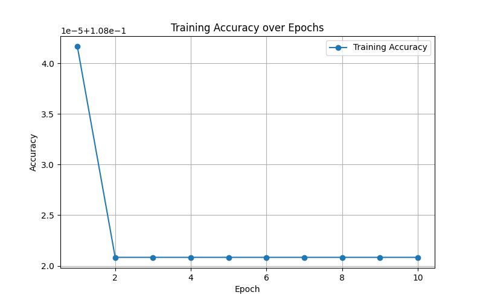

PSO Implementation
- Implementation of PSO on Custom Neural Network.
- Removed Backpropagation and in-turn Gradient Descent and use Particle Swarm Optimization technique for Neural Network Training.
Swarm Intelligence
-
Particle
class Particle: def __init__(self, random, position=[0.], velocity=[0.], position_range=None, velocity_range=None, dims=None, alpha=0.1): self._validate(random, position, velocity, position_range, velocity_range, dims, alpha) self.random = random self.position = position self.velocity = velocity self.position_range = position_range self.velocity_range = velocity_range self.dims = dims self.alpha=alpha self._init_particle() self.pbest = self.position -
ParticleSwarmOptimizer
class ParticleSwarmOptimizer: def __init__(self, particle_cls, c1, c2, n_particles, fitness_fn, compare_fn, n_iter=1, dims=None, random=True, particles_list=None, position_range=None, velocity_range=None): self._validate(particle_cls, c1, c2, n_particles, fitness_fn, compare_fn, n_iter, dims, random, particles_list) self.particle_cls = particle_cls self.c1 = c1 self.c2 = c2 self.n_particles = n_particles self.n_iter = n_iter self.fitness_fn = fitness_fn self.compare_fn = compare_fn self.position_range = position_range self.velocity_range = velocity_range self.dims = dims self.random = random self.particles_list = particles_list self._init_particles_list()
Neural Network
-
Layer
class Layer: def __init__(self, in_units, units, activation): self.w_shape = (in_units, units) self.b_shape = (1, units) self.n_wts = in_units * units + units self.shape = (-1, units) self.activation = activation def _reshape_weights(self, wts): W = np.reshape(wts[:self.w_shape[0] * self.w_shape[1]], self.w_shape) b = np.reshape(wts[self.w_shape[0] * self.w_shape[1]:], self.b_shape) return W, b def forward(self, wts, x): W, b = self._reshape_weights(wts) return self.activation(np.dot(x, W) + b) -
Model
class Model: def __init__(self): self.layers = [] self.n_wts = [] self.compiled = False def add_layer(self, layer): self.layers.append(layer) self.n_wts.append(layer.n_wts) def _calc_dims(self): return int(np.sum(self.n_wts)) def compile(self, loss_fn, dataloader_cls, metric_fn=None, c1=2., c2=2., n_workers=10, batch_size=32, batches_per_epoch=100, position_range=(-1, 1), velocity_range=(-1, 1)): self.dataloader_cls = dataloader_cls self.data_loader = partial(dataloader_cls, batch_size=batch_size, repeat=True, shuffle=True) self.metric_fn = metric_fn self.loss_fn = partial(loss_fn, layers=self.layers, n_wts=self.n_wts, dims=self._calc_dims()) self.optimizer = partial(ParticleSwarmOptimizer, particle_cls=Particle, c1=c1, c2=c2, n_particles=n_workers, compare_fn=lambda x, y: x < y, n_iter=batches_per_epoch, dims=self._calc_dims(), random=True, position_range=position_range, velocity_range=velocity_range) self.compiled = True def _forward(self, X, wts): w_index = 0 for i, layer in enumerate(self.layers): X = layer.forward(wts[w_index:w_index+self.n_wts[i]], X) w_index += self.n_wts[i] return X def fit(self, X, y, epochs=1): assert self.compiled, 'Call compile before training' data_loader = self.data_loader(X=X, y=y).get_generator() loss_fn = self.loss_fn(data_loader=data_loader) if isinstance(self.optimizer, partial): self.optimizer = self.optimizer(fitness_fn=loss_fn) for epoch in range(epochs): print('Epoch {}/{}'.format(epoch+1, epochs)) self.optimizer.optimize() if self.metric_fn is not None: print('Metric: {}'.format(self.metric_fn(y, self.predict(X))), end='\t') print('Loss:', self._loss(X, y)) def predict(self, X): assert self.compiled, 'Call compile before Prediction' data_loader = self.dataloader_cls(X, batch_size=32, repeat=False, shuffle=False).get_generator() y = [] for X in data_loader: y.append(self._forward(X, self.optimizer.gbest)) return np.vstack(y) def _loss(self, X, y): data_loader = self.dataloader_cls(X, y, batch_size=32, repeat=False, shuffle=False).get_generator() loss_fn = self.loss_fn(data_loader=data_loader) y = [] try: while True: y.append(loss_fn(self.optimizer.gbest)) except StopIteration: return np.mean(y)
Activation Functions
-
Relu
def relu(x): return np.maximum(x, 0) -
Leaky_relu
def leaky_rely(x, alpha=0.01): nonlin = relu(x) nonlin[nonlin==0] = alpha * x[nonlin == 0] return nonlin -
Sigmoid
def sigmoid(x): return 1 / (1 + np.exp(x)) -
Softmax
def softmax(x): e_x = np.exp(x - np.max(x)) return e_x / e_x.sum() -
Tanh
def tanh(x): return np.tanh(x)
Dataset
Mnist Dataset from Kaggle.
Training Accuracy


Fitness Fuctions
- Loss saved values over running on
Epoch=10.
Using pyswarm and keras to optimize neural network models
- The NoteBook containing training NN using brest_cancer dataset and optimized using PSO
pyswarm performance
Without PSO:
- Loss:
Validation loss: 0.06128723919391632 - Performance Metrics:

Accuracy: 0.9736842105263158 Precision: 0.9857142857142858 Recall: 0.971830985915493 F1-score: 0.9787234042553191 AUC: 0.998689813298395
With PSO
- Loss:
Validation loss: 0.06511683017015457 - Performace Metrics:

Accuracy: 0.9736842105263158 Precision: 0.9722222222222222 Recall: 0.9859154929577465 F1-score: 0.979020979020979 AUC: 0.9963969865705864
Refrence
Paper on Swarm Intelligence
- Particle Swarm Optimization: A Comprehensive Survey @Paper
- Distributed Swarm Learning for Edge Internet of Things @Paper